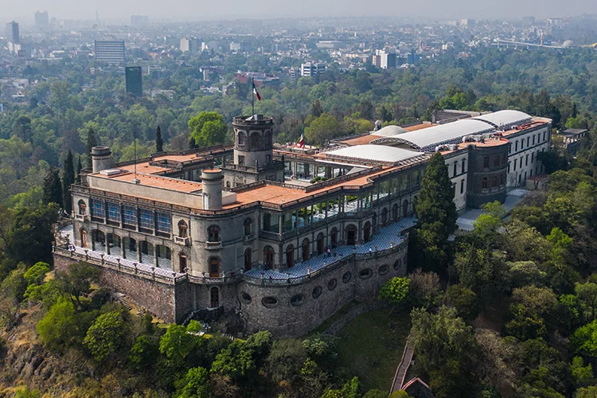
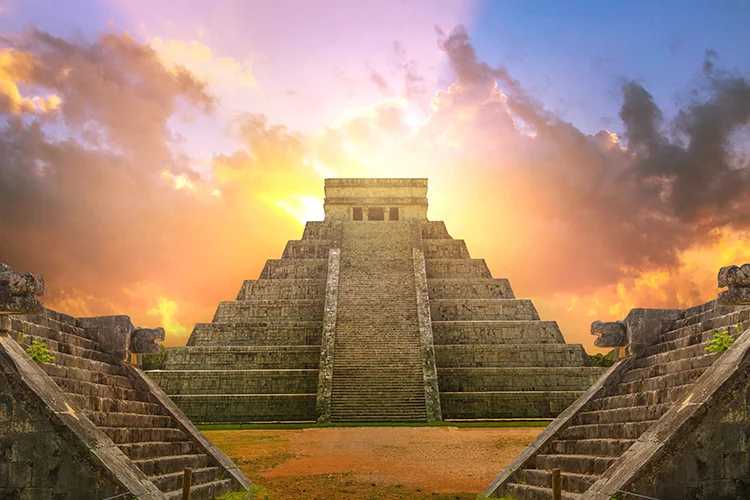
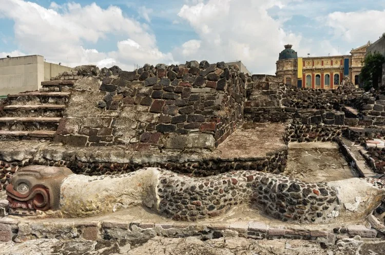
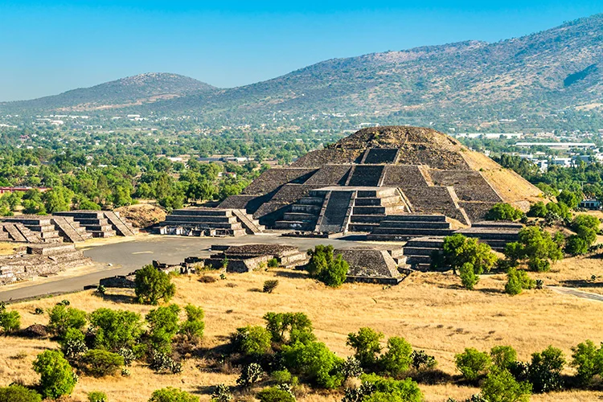
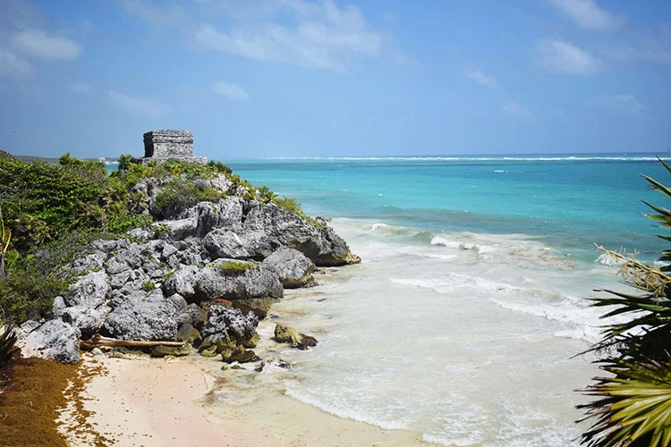

1. Castillo de Chapultepec

Chapultepec Castle is an eighteenth century building in Mexico City’s Chapultepec Park now containing Mexico’s National History Museum. Within its twelve halls, Mexico’s National History Museum charts the country’s diverse history, from the Pre-Hispanic era through to Spanish colonialism, Mexico’s revolution and its independence. Some of the National History Museum’s most significant exhibitions include the sword wielded by independence fighter José María Morelos in the Siege of Cuautla in 1812 as well as several murals depicting famous battles.
2. Chichen Itza

Stunningly well-preserved and imposingly beautiful, Chichen Itza is one of Mexico’s most impressive historical sites. A UNESCO World Heritage site based in the forests of the Yucatan Peninsula, Chichen Itza is actually made up of two cities built by two peoples, the Mayas and the Toltecs. The site is made up of several surviving buildings including a circular observatory known as El Caracol, the Warriors’ Temple and El Castillo. Accounts vary as to the date of the first settlement at Chichen Itza, placing it between the 6th and 9th century AD when the Mayas built the original city including “The Building of the Nuns” and a church.
3. Tenochtitlan

Tenochtitlan was established on an island in Lake Texcoco in 1325 AD as the capital city of the Aztecs and, in its final and most prosperous days, was ruled by Motecuhzoma II, also known as Montezuma. The remnants of Tenochtitlan are hard to find as they have been consumed by the development of modern Mexico City. Those sites which have been excavated, including five temples of which Templo Mayor is one, are protected on UNESCO’s World Heritage list, however there is no single Aztec site to visit. One of the most popular Tenochtitlan sites is Xochimilco. This is more of a beautiful park rather than an archaeological ruin, but features waterways that ran from the Aztec era as well as some flower gardens from that time. Alternatively, see the Templo Mayor entry for a more traditional site.
4. Teotihuacan

Teotihuacan was a holy Mesoamerican city built in around 400 BC in what is now Mexico and forms one of the country’s oldest archeological sites. Characterised by looming stepped pyramids, one of the most impressive aspects of Teotihuacan is the sheer size of these monuments, including the Pyramid of the Sun, which measures 225 by 222 metres at its base, rising 75 metres high. Visitors to Teotihuacan can maneuver their way through the city via its original streets, such as Avenue of the Dead, which divided the city into quarters, although take note that the site is absolutely enormous. Today, Teotihuacan is one of the most popular tourist sites in Mexico and includes numerous museums, including the Museo del Sitio where visitors can see various artefacts from the site.
5. Tulum
